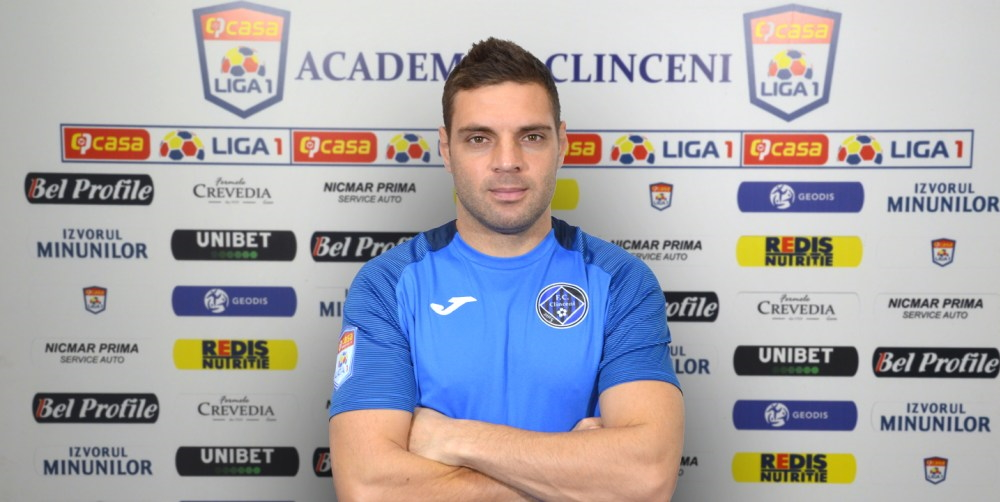

ADRIAN POPA VA JUCA LA ACADEMICA CLINCENI IANUARIE 21, 2021
Academica Clinceni și Adrian Popa au ajuns la o înțelegere. Astfel, mijlocașul de 32 de ani va evolua pentru echipa noastră până la finalul acestui sezon.
Adrian Popa nu mai are nevoie de nicio prezentare. Este cunoscut faptul că a jucat la U Cluj, Concordia Chiajna, FCSB, Reading, Taawon, Ludogoreț și FC Voluntari. Palmaresul este unul bogat. De trei ori campion al României cu FCSB. Campion
al Bulgariei cu Ludogoreț. Două Cupe ale României, una a Bulgariei, la care se mai adaugă și Supercupa României.
Are 51 de meciuri în cupele europene și 24 pentru echipa națională a României.